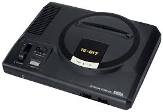
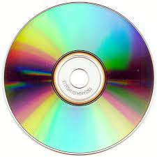
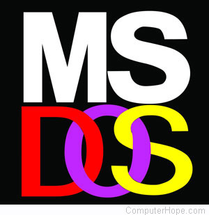
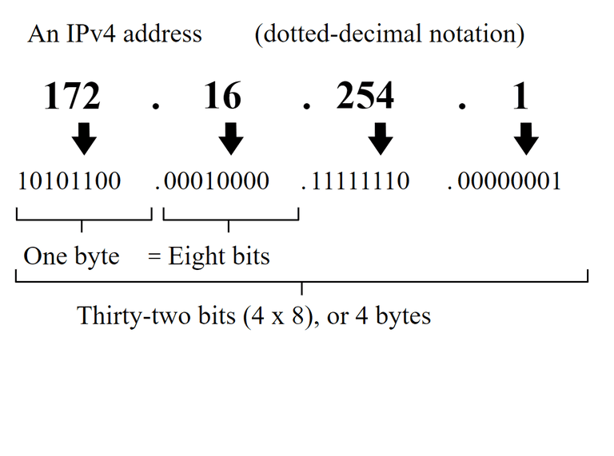
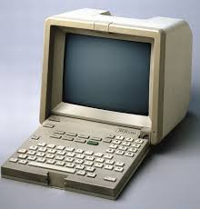

Haut de page
Haut de page
Informatique
NES

La Nintendo Entertainment System est sortie en 1983 au Japon et 1987 en France. Elle est l'une des consoles mythiques, et c'est très bien vendu. Durant cette décennie Nintendo avait un quasi monopole fasse à Sega.
Mega Drive

La Mega Drive est née en 1988 et construite par Sega un constructeur japonnais. Presque 1000 jeux étaient disponibles sur cette console. Dans le monde environ 37M d'unités ont été vendues contre 62M pour la NES.
CD

Le disque compact à lecteur laser est commercialisé en 1982 par l'association de Philips et Sony. Ils peuvent contenir en moyenne 700Mo. Les avantages sont considérables comparés aux vinyles qui ont une fragilité déconcertante et une qualité audio possédant des parasites.
MSDOS

MSDOS est créé en 1981 par Bill Gates. Après l'accord réalisé avec IBM, il a eu comme projet de créer un système d'exploitation pour les ordinateurs d'IBM. MSDOS fût gardé comme base du système de Windows jusqu'à la version XP de celle-ci.
TCP/IP Arpanet et IPv4

Le protocole TCP/IP et l'IPv4 sont l'une des bases d'internet. Le TCP/IP a été adopté par Arpanet en 1983 et assure un transfert de données plus fiable. Ensuite l'IPv4 fût réalisée en 1980, elle a pour but de différencier chaque utilisateur du réseau.
Minitel

Le Minitel est une icône française de ces années. Ce nouveau moyen de communication autre que le téléphone a charmé beaucoup de monde. Une messagerie était disponible, tout comme un annuaire et la presse.